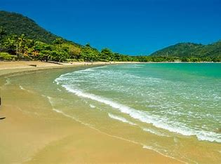

MAIS INFORMAÇÕES SOBRE A PRAIA:
Localização: Ubatuba, no litoral norte do estado de São Paulo, Brasil. A entrada principal fica na altura do km 64 da Rodovia Rio-Santos (BR-101), dentro de um bairro residencial com acesso livre.
Descrição Detalhada da Praia do Lázaro
A Praia do Lázaro é uma das mais belas e tranquilas praias de Ubatuba, atraindo tanto famílias quanto amantes de esportes aquáticos devido à sua diversidade de características.
Características Principais:
- Extensão e Areia: A praia possui uma faixa de areia branca e firme, com aproximadamente 1,5 km de extensão.
- Águas: O mar é calmo e cristalino, ideal para banho e atividades aquáticas. No canto direito, as águas são ainda mais tranquilas, perfeitas para famílias e crianças.
- Vegetação: Cercada pela Mata Atlântica, a praia oferece sombra natural e um ambiente fresco e agradável.
- Infraestrutura: A Praia do Lázaro conta com uma boa infraestrutura, incluindo quiosques, bares de praia, e opções de hospedagem como pousadas e chalés.
Atividades:
- Stand-Up Paddle e Caiaque: A praia é ideal para a prática de stand-up paddle e caiaque, especialmente nas águas calmas do canto direito.
- Caminhadas e Exploração: A extensa faixa de areia é perfeita para longas caminhadas e pedaladas, além de ser um ótimo local para apreciar o pôr do sol.
- Visitas a Praias Próximas: A partir da Praia do Lázaro, é possível acessar outras praias menores e igualmente belas, como a Praia da Sununga e a Praia Domingas Dias.